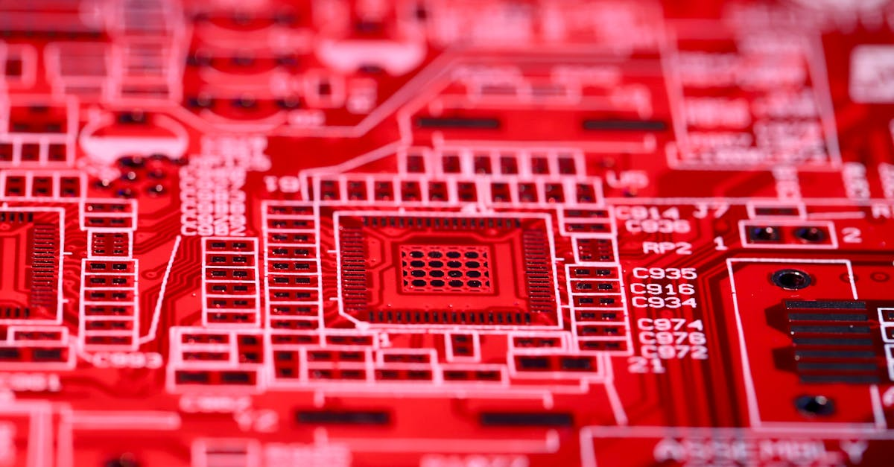

Le Virage Inattendu de Toto : Quand l'Industrie Sanitaire Rencontre l'IA
L'annonce a pris le monde financier par surprise, secouant les marchés et provoquant une flambée spectaculaire des actions de Toto Ltd. Jusqu'alors principalement connu pour ses innovations dans les équipements sanitaires, le fabricant japonais a vu ses titres bondir de près de 18% à Tokyo, un record. La raison de cet engouement ? Non pas un nouveau WC intelligent, mais une stratégie audacieuse visant à intensifier massivement ses investissements dans le secteur des composants de puces électroniques. Un virage à 180 degrés, dicté par une demande explosive émanant d'un acteur incontournable de notre ère numérique : l'intelligence artificielle. Mais que nous révèle cette transformation inattendue sur les forces profondes qui animent aujourd'hui l'économie mondiale ? Et surtout, comment cette ruée vers l'or des semi-conducteurs, alimentée par l'IA, pourrait-elle résonner jusqu'aux marchés des cryptomonnaies, où l'automatisation et les algorithmes prennent une place prépondérante ?
👉 À lire : OpenAI : Quand les Géants de l'IA Rencontrent la Réalité du Marché
Ce n'est pas un événement isolé, mais plutôt le symptôme d'une tendance de fond : l'IA est en train de remodeler chaque facette de notre société, des chaînes de production industrielles aux plateformes financières les plus sophistiquées. L'investissement de Toto, bien que surprenant par son origine, est emblématique de la course effrénée à l'innovation et à la capacité technologique. Il souligne une vérité fondamentale : la puissance de calcul est devenue la monnaie d'échange de l'avenir. Pour les acteurs du trading crypto, notamment ceux qui s'appuient sur des agents IA pour naviguer dans la complexité des marchés, cette évolution est loin d'être anecdotique. Elle impacte directement la disponibilité, le coût et l'efficacité des infrastructures sur lesquelles reposent leurs stratégies. C'est une histoire de convergence, où un fabricant de toilettes devient un acteur clé de la révolution numérique, et où cette révolution a des implications pour chaque investisseur averti.
👉 À lire : Manitoba contre l'IA et les jeunes : onde de choc pour la finance ?

L'IA, Moteur Silencieux d'une Demande Technologique Inédite
Pourquoi une telle frénésie autour des puces ? La réponse tient en deux lettres : IA. L'intelligence artificielle n'est plus une promesse futuriste ; elle est une réalité omniprésente, de la reconnaissance vocale de nos smartphones aux systèmes de diagnostic médical, en passant par les véhicules autonomes et, bien sûr, le trading algorithmique. Chaque avancée dans ces domaines exige une capacité de traitement des données toujours plus colossale, une vitesse d'exécution fulgurante et une efficacité énergétique optimisée. Les modèles d'IA, en particulier les réseaux neuronaux profonds, nécessitent des milliards de calculs par seconde pour apprendre, analyser et prédire. C'est là qu'interviennent les semi-conducteurs, véritables cerveaux de silicium.
Les puces dédiées à l'IA, souvent des GPU (Graphics Processing Units) ou des ASIC (Application-Specific Integrated Circuits), sont conçues pour gérer ces tâches intensives avec une efficacité inégalée. La demande pour ces composants a explosé, créant une pénurie mondiale qui a ralenti de nombreuses industries. L'investissement de Toto dans ce secteur n'est donc pas seulement une opportunité de diversification, c'est une réponse stratégique à un besoin global criant. Comme l'a si bien dit Dre. Léa Dupont, spécialiste des semi-conducteurs :
« Nous sommes à l'aube d'une ère où la capacité de calcul définit la puissance économique et géopolitique. Chaque gigahertz supplémentaire, chaque nanomètre plus petit, ouvre de nouvelles frontières pour l'innovation, du développement de médicaments à la modélisation financière complexe. »Cette course à la puissance de calcul a des répercussions directes sur l'écosystème du trading crypto, où la performance des agents IA est intrinsèquement liée à la rapidité et à la sophistication des puces qui les animent. Une infrastructure technologique robuste est le socle invisible de toute stratégie de trading performante.
Les Semi-conducteurs : Le Nouvel Or Noir de l'Ère Numérique
Si le pétrole a été le moteur de l'économie industrielle du XXe siècle, les semi-conducteurs sont sans conteste l'or noir de l'ère numérique. Leur importance stratégique est devenue une évidence pour les gouvernements et les entreprises du monde entier. La chaîne d'approvisionnement est complexe, mondialisée et soumise à des tensions géopolitiques constantes. La pandémie de COVID-19, puis les conflits commerciaux, ont mis en lumière la vulnérabilité de cette chaîne, entraînant des retards de production massifs et des hausses de prix dans des secteurs aussi variés que l'automobile, l'électronique grand public et, bien sûr, l'infrastructure des centres de données qui hébergent les IA.
L'investissement de Toto dans ce domaine est donc une démarche qui va au-delà de la simple diversification financière ; il s'inscrit dans une tendance plus large de résilience et de souveraineté technologique. De nombreux pays et consortiums industriels cherchent à relocaliser ou à sécuriser la production de puces pour éviter de futures ruptures d'approvisionnement. Cette course aux fonderies et aux usines de fabrication de puces est un indicateur clair de la valeur stratégique attribuée à ces composants. Les entreprises qui parviendront à maîtriser ou à sécuriser l'accès à ces technologies détiendront un avantage concurrentiel considérable. Pour les plateformes de trading basées sur l'IA, cette dynamique est cruciale. L'accès à des puces de dernière génération garantit non seulement la capacité à exécuter des algorithmes de trading de plus en plus complexes, mais aussi à maintenir une longueur d'avance en termes de vitesse et de précision, des facteurs décisifs sur des marchés aussi volatils que celui des cryptomonnaies. L'analyste financier M. Kenji Tanaka résume bien la situation :
« Posséder une part de l'industrie des semi-conducteurs aujourd'hui, c'est investir dans le cœur battant de l'économie de demain. »

De l'Usine de Toilettes aux Fonderies de Puces : Une Stratégie Audacieuse et Visionnaire
Comment un fabricant de toilettes de renommée mondiale se retrouve-t-il à investir dans les puces électroniques ? L'histoire de Toto n'est pas aussi farfelue qu'il n'y paraît à première vue. Bien que leurs produits finis soient très différents, l'industrie sanitaire de pointe, en particulier la fabrication de céramiques techniques, exige une précision et une ingénierie des matériaux de très haut niveau. Toto possède une expertise reconnue dans la fabrication de composants de haute précision et de matériaux avancés, des compétences qui peuvent être transférables et valorisables dans la production de certains éléments des semi-conducteurs ou de leurs équipements de fabrication. Il s'agit d'une stratégie de diversification intelligente, tirant parti des compétences existantes pour s'aventurer sur un marché en pleine explosion.
Ce mouvement audacieux de Toto illustre une tendance croissante où des entreprises de secteurs traditionnels cherchent à se réinventer en s'attaquant aux marchés de la haute technologie. C'est un pari risqué, certes, mais potentiellement très lucratif, étant donné la demande insatiable pour les puces d'IA. Il est fascinant de voir comment l'intelligence artificielle ne se contente pas de transformer les industries existantes, mais pousse également des acteurs inattendus à se positionner sur de nouvelles chaînes de valeur. Cette capacité à pivoter et à s'adapter est une marque de fabrique des entreprises résilientes et visionnaires. Pour l'écosystème crypto, cela signifie que les infrastructures technologiques sous-jacentes à l'IA, y compris celles qui alimentent les agents de trading, bénéficieront d'un afflux de capitaux et d'innovations venant de sources diverses. Une compétition accrue dans la production de puces pourrait à terme conduire à des composants plus performants et plus abordables, un avantage certain pour quiconque dépend de la puissance de calcul avancée.
Répercussions sur l'Écosystème Crypto et l'IA Trading : Un Cœur Technologique Battant
L'investissement de Toto dans les puces pour l'IA, bien que lointain en apparence, a des implications directes et profondes pour l'écosystème des cryptomonnaies et, plus spécifiquement, pour le trading automatisé par intelligence artificielle. La performance des agents IA qui analysent les marchés 24h/24, identifient les tendances, exécutent des ordres et gèrent les risques dépend directement de la puissance et de l'efficacité des semi-conducteurs sur lesquels ils tournent. Une offre accrue et des innovations dans ce domaine se traduisent par des algorithmes plus rapides, plus complexes et plus précis.
Imaginez un agent IA capable de traiter en temps réel des flux de données exponentiellement plus importants, d'analyser des centaines de paires de trading simultanément, et d'adapter ses stratégies en millisecondes face à des événements imprévus. C'est précisément ce que permet l'amélioration continue des puces d'IA. Pour les plateformes comme CryptoMind AI, qui misent sur l'automatisation intelligente pour optimiser les rendements, cette évolution est fondamentale. Elle garantit que les outils à disposition des utilisateurs sont à la pointe de la technologie, capables de naviguer avec agilité dans la volatilité inhérente aux marchés crypto.
- Une meilleure disponibilité des puces réduit les coûts d'infrastructure.
- Des puces plus performantes permettent des modèles d'IA plus sophistiqués.
- Une concurrence accrue stimule l'innovation et la fiabilité.
Conclusion : L'Aube d'une Nouvelle Ère Technologique et Financière
Le virage stratégique de Toto Ltd. vers les composants de puces d'IA est bien plus qu'une simple annonce boursière ; c'est un signal retentissant. Il confirme la position centrale de l'intelligence artificielle comme moteur de l'innovation et de la croissance économique mondiale. Des fabricants de sanitaires aux géants de la technologie, tous reconnaissent que la puissance de calcul est la clé de voûte de l'avenir. Cette convergence des industries vers les semi-conducteurs d'IA n'est pas seulement une bonne nouvelle pour les entreprises technologiques, elle est une aubaine pour tous les secteurs qui dépendent de l'analyse de données et de l'automatisation avancée, y compris les marchés financiers et le trading de cryptomonnaies.
En fin de compte, la course aux puces d'IA, telle qu'illustrée par l'initiative audacieuse de Toto, renforce l'infrastructure technologique qui sous-tend des outils comme les agents IA de trading. Elle promet des systèmes plus robustes, plus rapides et plus intelligents, capables de décrypter les signaux faibles des marchés et d'agir avec une précision inégalée. Pour les investisseurs avisés, comprendre ces dynamiques sous-jacentes, c'est anticiper les tendances futures et se positionner pour capitaliser sur la prochaine vague d'innovation. L'ère de l'IA est là, et avec elle, l'opportunité de redéfinir les stratégies d'investissement grâce à des outils qui travaillent sans relâche, 24h/24, pour vous.